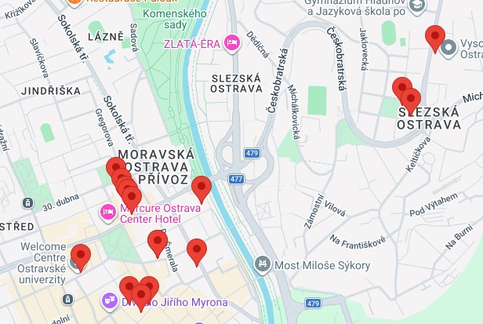

Webové stránkyLS 2026 |
|
|---|---|
NavigaceRychlá navigace (mapa)Klikněte na budovu:  |
Vítejte v letním semestru
Tento předmět vás provede základy tvorby moderního webu. Příští konzultace se koná . Zaměříme se na sémantiku HTML. Doporučenou četbu najdete v sekci Základy webového designu. Kontakt: Pietro di Canossa Katedra informatiky Email: pietro.di.canossa@univerzita.cz |
| ©2026 | |